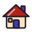

Piloto de estilo: figuras do Falaê
Regras do estilo "adesivo de caderno": grade 64×64; contorno navy
#1B1C33 de 3 unidades, pontas arredondadas, sem degradê; 2 a 3 tons chapados da
paleta do app (Manga, Anil, Folha, Acerola, Maracujá, Jabuticaba e neutros); um único realce
branco a 55% de opacidade em cada desenho; halo branco fino por fora do contorno para
funcionar em fundo escuro; sem texto dentro do desenho; detalhes internos com 2,5 de traço;
tamanho mínimo 24 px na tela e 8 mm impressos.
Fundo claro
Fundo escuro
Preto e branco (grayscale + contraste)
No contexto (muda com o tema da página)
in the kitchen
dentro de um lugar

at home em casa
on the bus no ônibus
at night à noite
at 3 o'clock às 3 horas
I'm at home.
in Brazil
Dica
Cuidado
Hi! Nice to meet you.
Carta coringa
friends
amigos
amigos